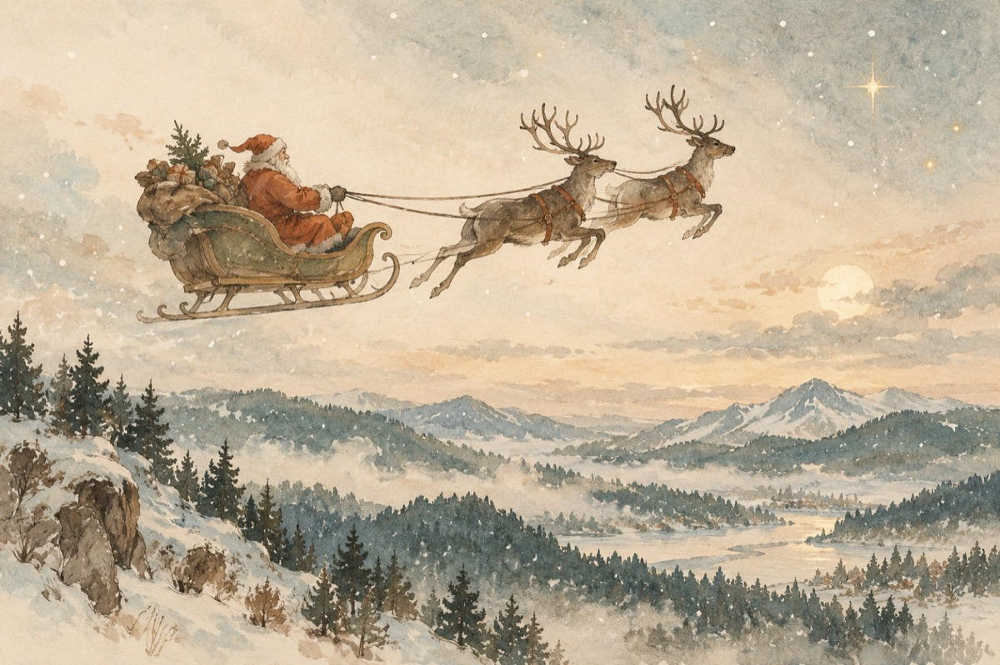

Moș Crăciune
MOȘ CRĂCIUNE, MOȘ CRĂCIUNE,
Știi ce îmi place la tine
Când e vorba de copii,
Orice-ar fi, nu întârzii!...
Nu ții cont că plouă-afară,
Sau că zăpada coboară
Prin viscole și troiene
De nimic n-ai a te teme!
Săniuța fuge, zboară,
Se înalță și coboară
Peste munți și peste văi
Trasă de frumoșii reni!
Ești bătrân, dar plin de viață
Fie noapte, dimineață
Tu de unde nu gândești
Pe ușă, pe horn sosești
Încărcat cu daruri vii
Și cu bunătatea ta, le dăruiești la copii
Care cu drag te așteaptă, cu cântece, poezii,
Te iubește toată lumea, tu să știi!
Este noaptea de ajun
A vestitului Crăciun
Noaptea sfetnic sănătos
S-a născut pruncul HRISTOS!
Tu pe urma magilor
În lumina stelelor
Împarți daruri la copii
Duci în case bucurii!
MOȘ CRĂCIUNE, MOȘ CRĂCIUNE,
Mulțumim că-ai fost la toți și la mine
Și la anul care vine
Te-așteptăm cum se cuvine!...
Vasile Groza